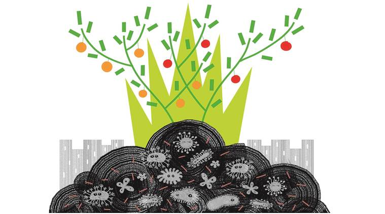
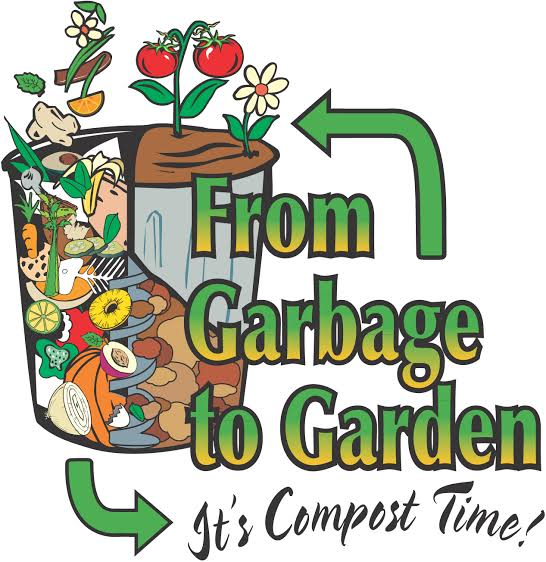

Composting
With the right conditions (air and moisture), organic waste such as food and plant materials can be decomposed by bacteria,
fungi, worms and organisms. Decayed organic matter is humus. Yard waste such as grass and flower clippings can also be composted.
There are other larger composting units used in schools and some restaurants. These have larger cylindrical chambers of about 8-10 feet in length.
Waste items are usually layered in the chamber, dry leaves on food waste layers. The content of the cylinders are turned regularly for aeration to speed
up the composting. It takes about 2-3 weeks for the composting to complete.

Commercial composting units are a lot more sophisticated, as they are tested for color, pH, odor, moisture,
and other related characteristic that appeal to compost buyers.
Bin/pile composting is easier for many households because one does not have to be too careful with what to put into it.
Next
Previous